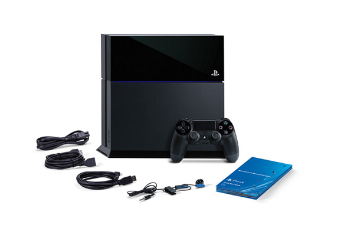

Console Sony Playstation 4 500Gb

Contato
Modelo CUH-1201a
Carbon Black
500gb - Lacrado
R$1699,90
Ou em 10x de R$169,90
Preço: R$ 1.699,90
Ou Parcelado em até 10x de R$169,90 Sem Juros
Modelo CUH-1201a
Carbon Black
500gb - Lacrado
R$1699,90
Ou em 10x de R$169,90
PlayStation 4 - A nova máquina da Sony.
PlayStation 4, foi esperado com ansiedade pelos apaixonados por videogames, a Sony lançou o aparelho no ano de 2013. A Sony Computer Entertainment mostrou ao mundo sua mais nova joia: o PS4. Uma nova geração de consoles com recursos surpreendentes!
O PS4 conta com um hardware compacto e poderoso, não só capacitado a oferecer ótimos produtos a partir de um ponto de vista visual, mas também para fornecer recursos sociais e criativos, nunca antes visto. Esqueça tudo que você conhece sobre gráficos e maravilhe-se com o poderoso Playstation 4!
O PS4 possui uma ligação mais próxima com o portátil PS Vita. Com ele é possível jogar qualquer game que use o controle DualShock 4 no Vita onde tenha redeWi-Fi. Um aplicativo denominado “PlayStation App”, possibilita que aparelhos móveis (celulares e tablets) se tornem uma segunda tela para jogos, indicando informações adicionais como mapas.
Uma brutal descoberta
O PS4 Sony superou as expectativas e adentrou em novos patamares tecnológicos! A Sony não mediu esforços e investiu pesado na nova máquina.
O videogame dispõe de chip customizado, com um processador central x86-64 com 8 núcleos, denominado Jaguar. Além de um processador gráfico com a tecnologia Radeon, também da AMD, com visuais espetaculares, com 8 GB de uma estupenda memória RAM.
Tudo isso somado ao disco rígido de 500GB, ao leitor de Blu-Ray, a entrada USB 3.0, entre outras características. É possível afirmar que o PS4 Sony é uma “máquina” muito potente com criações nunca antes vistas e jogos ainda mais reais.
Potentes e fantásticas características
- Processador central X86-64 da AMD Jaguar com 8 núcleos
- Processador gráfico AMD Radeon (baseado na próxima geração AMD) com 1,84 teraFLOPS
- Tecnologia APU (Accelerated Processing Unit)
- Memória de 8 GB DDR5 com um fluxo de 176 GB por segundo
- Disco rígido embutido - 500GB<
- Leitor de disco Blu-Ray (6x) e DVD (8x)
- Portas USB 3.0 (super speed), AUX (para a câmera PlayStation 4 Eye), HDMI, Saída Analógica AV e Saída Óptica (Digital Output)
- Comunicação Ethernet (com fio), IEEE 802.11 b/g/n (sem fio) e Bluetooth 2.1 (EDR sem fio
Como dominar essa “criatura”...
Para conseguirmos “domar” um videogame como esse, temos que possuir um ótimo joystick. E o denominado DualShock 4 é um grande domador. Uma série de pequenos ajustes foi realizada. Ele conta com seis eixos (chamada de sensibilidade elevada) e uma superfície sensível ao toque, que serve para dar melhor resposta e precisão a jogabilidade.
Os sticks tiveram um melhora do material de superfície e algumas mudanças em sua forma, com um manejo mais delicado. Os gatilhostambém tiveram alterações com um design curvilíneo para uma interação mais fluida. Em uma última análise, o botão de opções substitui os botões com as funções Start e Select, dos controles do PlayStation 3, permitindo percorrer os menus dos jogos de uma forma diferenciada.
Especificações Técnicas
| Mídias compatíveis: | DVD, Blu-Ray |
| Mídias Compatíveis: | Blu-ray 6x CAV / DVD 8x CAV |
| Memória RAM: | GDDR5 8 GB |
| Alimentação: | 100-240 V 2.5-1.15 A 50/60 Hz 250 W |
| Cor: | Preto |
| Garantia: | 12 meses |
VÃdeo